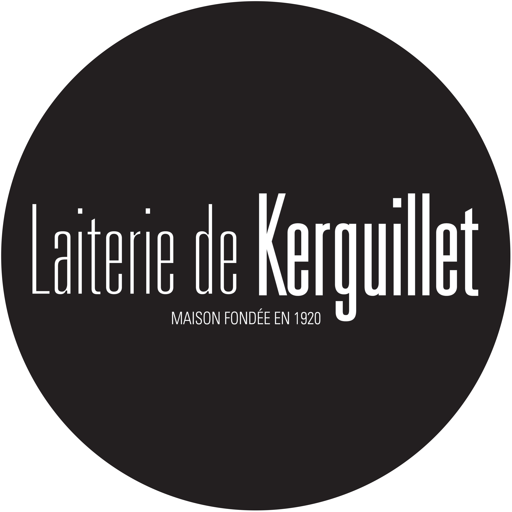

Apprentie ingénieure Génie Industriel 4.0 - Service qualité
Septembre 2025 - Août 2028
- Amélioration continue des processus de production
- Gestion et analyse des risques industriels
- Préparation d'audits clients
- Suivi et pilotage qualité en environnement agroalimentaire
- Digitalisation des tâches et optimisation des outils de suivi
Community Manager & Développeuse Web
Le Mont Smash Burger - Actuellement
- Gestion Instagram et création de contenu digital
- Développement du logiciel de caisse
- Conception d’un dashboard automatisé de suivi HACCP

Employée polyvalente - KFC
2023 - 2024
- Formation des nouveaux employés aux procédures internes
- Encaissement
- Gestion des stocks et approvisionnement des produits
- Respect des normes d'hygiène et de sécurité alimentaire
- Travail sous pression pour respecter les délais de service
Gestionnaire de cabinet médical
été 2021 et 2022
- Accueil des patients et gestion des appels téléphoniques
- Gestion complète de la base de données patients
- Respect strict de la confidentialité des informations médicales